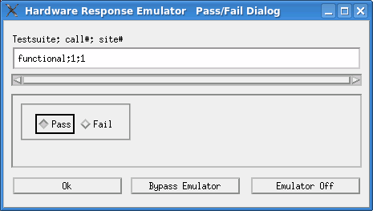
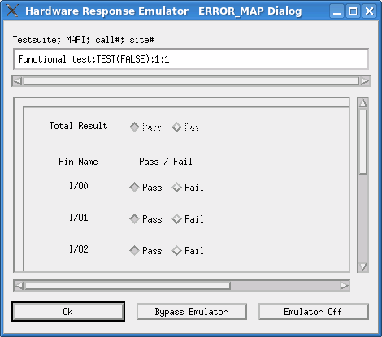

Pass/Fail type and ERROR_MAP type
Pass/Fail type
The Hardware Response Emulator Pass/Fail Dialog window opens when one of the following APIs is executed offline using the emulator in "Store" mode. In this dialog, you can create or update the hardware response file for the test by specifying the user-provided pass/fail result for the executed APIs.

To set the pass/fail result for the above APIs:
- Select the Pass or Fail options that corresponds to the global pass/fail result of the test.
- Click OK to save the specified data in the hardware response file in the hardware response directory.
Testsuite; MAPI; call#; site# |
This field displays the test suite name and test method API that takes the hardware response data specified in this dialog. The expression in this field is similar to the one in ARRAY_X type. |
Pass/Fail |
This field displays the global pass/fail result for the API shown in the Testsuite; MAPI; call#; site# field. You can also specify the Pass/Fail result by clicking the appropriate option. |
OK |
Same as the ARRAY_X type. |
Bypass Emulator |
|
Cancel Emulator |
ERROR_MAP type
The Hardware Response Emulator ERROR_MAP
Dialog window opens when the test suite flags per pin on pass or per pin
on fail are set and TEST(continue) or TEST(port,
continue) API is executed.
To set the pass/fail result for the above APIs:
- Select the Pass or Fail options, depending on the desired pass/fail result.
- Click OK to save the specified data in the hardware response file on the hardware response directory.

Testsuite; MAPI; call#; site# |
This field displays the test suite name and test method API that takes the hardware response data specified in this dialog. The expression in this field is similar to the one in ARRAY_X type. |
Total Result |
This field displays the global pass/fail result of the test specified in the pass/fail type dialog. You cannot change this setting. |
Pass/Fail |
This field specifies the per pin pass/fail result for the test specified
in the Testsuite; MAPI; call#; site# field. You can specify the
per-pin pass/fail result with this option. However, you cannot set the per-pin pass/fail
result that is against the global pass/fail result represented with the Total
Result button. For example, you cannot set any pins to |
OK |
Same as the ARRAY_X type. |
Bypass Emulator |
|
Cancel Emulator |
Functional changes
- Introduced before SmarTest 6.3.2